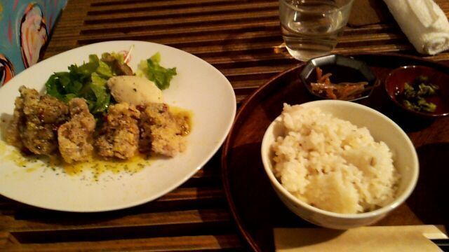

Hello ! !
ろってぃだよん(^▽^)
今はとある撮影中です !
久々の全員そろってのお仕事(( ´▽`)
動画ぢゃあなくって
写真撮影よぉ〜。
すごく綺麗な場所に来ていて
皆楽しく撮影しておりますよん♪
あ、そ−いえば
25日のあみのblogの質問返しで
あみの推しメンは?ってゆうのに
「まひろ、なんだか可愛い」って
書いていたのを見て、
嬉しいキモチになった(*´▽`*)
Rotty夢いぇ〜い 笑)))
皆いぇ〜い ☆
たたんっ ／
話とぶ。ぴょんっ )))
最近の rottyの晩御飯だよぅ♪

唐揚げに
オリーブオイルなどぅ
チーズなどぅ
黒コショウなどぅ
かかっていて、
サックサクでお肉は柔らかくて
とーーっても
美味しかったの(〃ω〃)
最後にっ、ぴょんっ)))
ひなちまが15歳の
お誕生をむかえましたぁーー
＼(^o^)／
本当におめでとぉーう ☆)))
ひなは
苦しいことがあっても
悔しいことがあっても
いつも『ぐうっ !!!』 って
自分の気持ちを
抑え込んでいるよね´・_・
こんなまひろで良かったら
もっと色々 気持ちぶつけてきて
いいんだよ?
１人ぢゃないから
いつでも頼ってください。
ひなちまが頑張ってることは
ちゃんと皆わかってるよ*^^*
昨日も言ったけど
ひな大好きやで ／
これからもよろちくんね♪
... ひなきずいてないけど
今隣に ひながいる ^^
ではではっ
また更新します (*^^*)
のし,ろってぃ−より (*´▽`)／